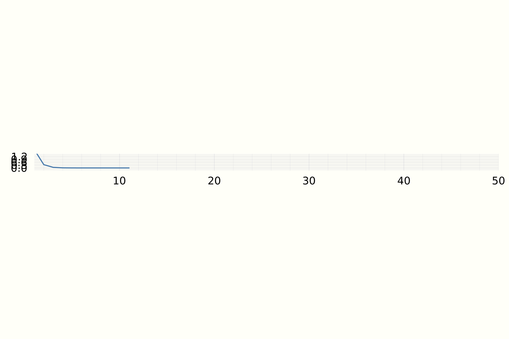

Errors in numerical computations and condition number
There are various ways erros creep into numerical computations, e.g. discretization, modelling, approximation etc. In many numerical computations we are trying to approximate a solution, If we don't know the exact solution to say an problem how do we estimate the errors? For example say we want to find a root \(x_*\) of \(f(x) = 0\), and our approxiate solution is \(x_{est}\), how do we measure error \(|x_* - x_{est}|\) without knowing \(x_*\)?
This is an example for the syntax. This is a note that will appear in a tag in Markdown. [-]And this is the side comment[-].
-
Forward Error: Use a proxy for the actual error as an estimate for the real error. E.g. use \(|f(x_*) - f(x_{est})|\) as a proxy for \(|x_* - x_{est}|\).
-
Backward Error: Estimate how much change in the problem is necessary so that the approximate solution becomes exact? To understand this consider solving the system of linear equations \(Ax = b\). Say we have an approximate algorithm which gives us \(x_{est}\). We can compute \(Ax_{est} = b_{est}\), the change \(b - b_{est}\) is a change in \(b\) (which is part of the problem formulation ) can make the approximate solution exact. This is called the backward error. In this example computing the forward error would be to compute, \(|A^{-1} b - x_{est}|\) which requires a matrix inversion (and that computation may itself have errors of its own). Many times its easier to compute the backward errors than the forward errors. this is a note
Condition Number: A problem is well conditioned if low for backward errors imply low forward errors. So a small change in the problem (e.g. values of matrix \(A\) in \(Ax = b\)) will have small change the solution.
In numerical linear algebra we compute the condition number of a matrix to judge its well-behavedness. The condition number of a matrix A with respect to a given norm \(\| \cdot \|\) is, |-| this is not working |-|
\begin{equation} \text{cond}(A) = \frac{\| A \|}{ \| A^{-1} \|} \end{equation}
Gradient Descent
using Flux
abstract type DescentMethod end
struct GradientDescent <: DescentMethod
α
end
init!(M::GradientDescent, f, ∇f, x) = M
function step!(M::GradientDescent, f, ∇f, x)
α, g = M.α, ∇f(x)
return x - α*g
end
function minimize(M::DescentMethod, f, ∇f, x, n, ε=0.0001)
init!(M, f, ∇f, x)
for i in 1 : n
x′ = step!(M, f, ∇f, x)
if norm(x - x′) < ε
break
end
x = x′
end
return x
end;
Lets compare the solution of A\b to the one achieved by
GradientDescent.
M = randn(5, 5);
A = M' * M
b = randn(5)
f = x -> 1/2 * x' * A * x - b' * x
∇f = x -> gradient(f, x)[1]
x = randn(5)
x̂ = minimize(GradientDescent(0.05), f, ∇f, x, 5000)
print(norm(x̂ - A\b))
67601.23007370268
Conjugate Gradients
using LinearAlgebra, IterativeSolvers
A = diagm(100:199)
b = ones(100)
x, history = cg(A, b, log=true)
plot(history[:resnorm], legend=false)

References:
[1] Trefethen, Lloyd N., and David Bau III. Numerical linear algebra. Vol. 50. Siam, 1997.
[2] Kochenderfer, Mykel J., and Tim A. Wheeler. Algorithms for optimization. Mit Press, 2019.
[3] Solomon, Justin. Numerical algorithms: methods for computer vision, machine learning, and graphics. CRC press, 2015.